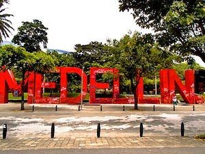
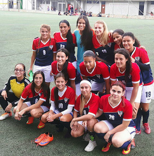

This web page has been set up to raise money for Las Guerreras women’s football team, based in Medellín, Colombia. The majority of its players come from families of very modest income, and many face economic and sociological barriers which often makes it difficult for them to play. All proceeds will go directly towards helping the players: whether it be paying for transportation to trainings and matches, paying for balls and training equipment or inscriptions to the league. In setting up this page, our aim is to ensure that football truly remains a sport for all.
In June 2017, I moved to Medellín, for three months as a language student. A chance encounter led me to play with Las Guerreras, where I discovered an exceptional group of young women who are fighting to pursue their dreams.
The majority of my teammates come from economically disadvantaged neighbourhoods: San Javier, Comuna 13, and Robledo. With trainings four days a week and at least one game on the weekend, the commitment to Las Guerreras is an economic burden to some of the players. To make sure everyone could play, often the coach and players would pool together. Typically, a metro ticket as little as 2 euros could prevent players from attending trainings or matches.
As the interviews on the following page illustrate, women’s football in Colombia remains marginal. Forward Dani Ocampo describes how, as a child, she was criticized for playing, mocked and called a “hombrecito” or “little man”. Many of the players speak of women’s football being ill received by their families and neighborhoods; of the teasing, stereotyping and lack of support they experienced, no matter talented they might be.
Last year marked a positive step in Colombia recognising women’s football. In February 2017, the first ever professional women's league, the Liga Antioqueña feminina, was formed.
Las Guerreras has the talent and motivation to join this league, but lack the necessary funds. I strongly believe that supporting women’s football in Colombia is an effective way of encouraging the empowerment of a group of women who face much discrimination for their class and gender. My teammate Monica Zapata expresses it better than I can: